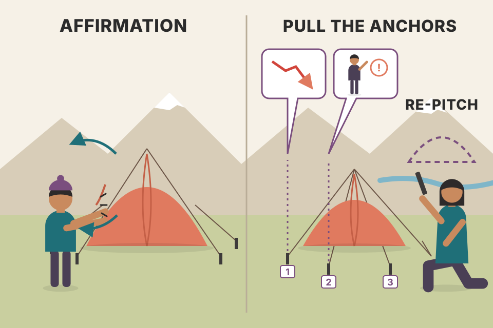
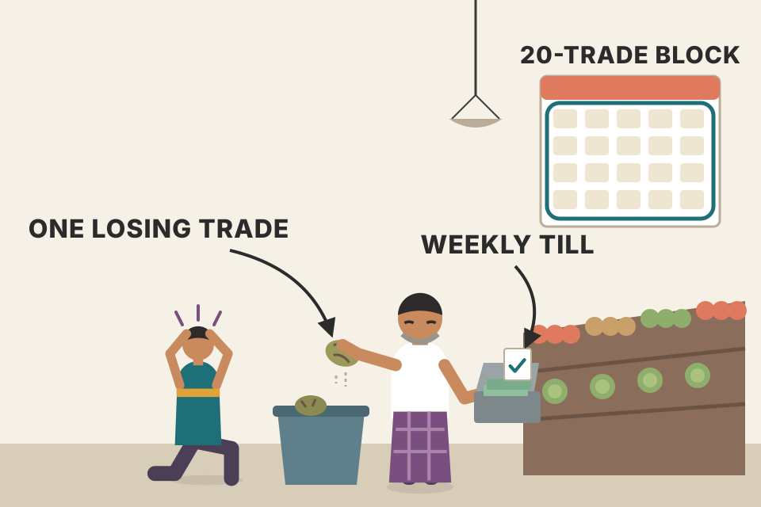
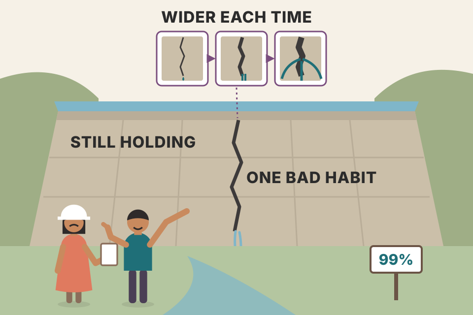
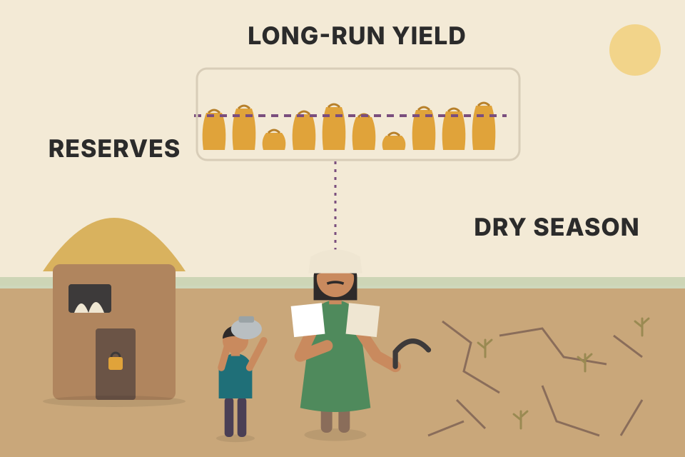

Module 9 is the inner work of trading: knowing yourself, sorting and changing your beliefs, handling fear and loss, keeping discipline, and being patient while skill grows. Grimes' stance runs through all of it: psychology matters, but it can't rescue a trader who has no edge. Every exercise and all twenty essays are here in the module's order, in plain words, each with a picture, a mechanism, and a live tool where the idea has numbers in it. All charts use simulated data, never real market results.
The module has two halves. First come three exercises (introspection, understanding beliefs, transforming beliefs) and a reading list. Then come Grimes' blog essays, grouped under five headings. The chain below is the logic that ties them together: an edge is necessary, but only your actions turn it into money, and your actions come from beliefs, emotions and habits you can learn to see and change.
Grimes opens by saying psychology is not an afterthought. In the first version of the course every module had its own psychology unit, so the topic ran through the whole course. The 2017 revision moved most of those units into this final module, for two reasons:
The readings for this module are longer than in earlier ones. They are Grimes' own blog posts, picked over the years, and he asks you to read them carefully because they contain hints and directions that aren't covered anywhere else in the course.
Learning to drive. The rules of the road and car control can be taught in a set order over a few weeks. Staying calm when someone cuts you off on a highway can't be put on a schedule; some people get there in a month and some take years. Grimes stopped forcing the two to march together.
Pattern knowledge is something you can check: a test either shows an edge or it doesn't. Psychological change is about habits and emotional reactions, which change through repetition and time, not through reading. Different kinds of learning need different clocks, and the revision gives each its own.
Grimes admits introspection is hard. We lie to ourselves a lot of the time (sometimes usefully), and we easily over- or under-weight our strengths and weaknesses. In other people we spot it at once: someone who rates themselves far too highly, someone else who should have much more confidence. A balanced, accurate view of your own strengths, weaknesses and potential is not normal, and that is exactly the goal of this project.
The scope: understand your
There's no right way, but here are approaches that work for others (adapt them freely):
Once you see your motivations, strengths and weaknesses more clearly, you're better placed to shape yourself into the person you want to be. Be honest with yourself: not brutal, not cruel, but fair. The goal is to see clearly and accurately.
A photographer developing film. The first print (day 1) is murky. Each day you return to it, the image sharpens a little. You don't get a clear picture by staring hard once; you get it by coming back to it again and again over weeks.
One sitting captures only what's top of mind, which is coloured by today's mood. Returning daily samples you in many states (after a win, after a loss, tired, rested), so the list averages out the noise of any single day. Editing at the end of the week turns raw notes into categories you can act on, and outside feedback catches the blind spots you can't see from the inside.
Don't start this until two things are done: the Belief Inventory from the previous module and the introspection above. Both take real time to do well. Then turn to understanding your beliefs and motivations, and to turning some limiting beliefs into useful, empowering ones.
Take the beliefs from both projects and sort them:
Build whatever system makes sense to you. Trust your intuition, and expect to revisit the sorting several times. It takes a few paragraphs to explain, he says, but done well it shows you who you are, why you are that way, and maybe how to grow into who you want to be.
A garden survey before you start weeding. You don't pull plants at random; you map what's there, how deep each root goes (certainty) and how much ground it covers (importance). The weeds with deep roots in the middle of the bed are the ones to plan for.
The three scales tell you where change will be hard and where it pays. A limiting belief you hold weakly may fall away once you just notice it. A limiting belief held with near certainty is anchored in experiences you take as proof, which is why section 4 works on the anchors rather than arguing with the belief. Importance tells you which ones actually touch your trading. Putting the most limiting, most certain, most important beliefs first is my own reading of how to use the map (the book leaves the system to you).
Except "money is dirty" and "I live in a universe of abundance", the example beliefs on the map are mine, chosen as typical trader beliefs. Nothing is stored: the map resets when you reload.
Now the work of changing the beliefs that have held you back. Grimes suggests an outside view can help a lot: a coach is especially effective, but a friend, a therapist or a counsellor also works, because it's easier to see someone else's limits than your own. You can make real progress alone (perhaps through your journal or self-talk), but even a few sessions with someone used to this work can change your life.
Your beliefs are the sum of your learning, thinking and life experience, reinforced again and again. They are part of the fabric of your reality. Some are not true; some of those are harmless, but some are harmful. If you want different results from the world, changing your beliefs is one of the best levers.
Affirmations usually don't work. Writing a new belief and repeating it daily with feeling, maybe in a mirror, is rarely effective, because beliefs are anchored in what we perceive as reality and the mind rebels when you force them. His silly example: try affirming your way out of "I cannot walk through walls"; every wall you meet reinforces the old belief. (He allows that affirmations do work for some people.)
The framework he uses:
Done with intention, responsibility, care and love for yourself, this shows you the belief from another angle and lets you question its foundations. Often you can then choose to replace it with something more constructive, and here affirmation-style reminders can help you see with new eyes. This is only the surface, he says; there's much more material if it interests you. Change your beliefs and you change your world, and yourself.

A tent pegged down by guy ropes. Pushing on the tent (affirmation) just makes it spring back. Pull the pegs one by one (the anchors in step 3), check what each was holding up (step 4), and the tent can be moved and re-pitched somewhere better.
A belief is a summary your mind has drawn from evidence. Forcing a new summary while the evidence stays the same fails, because the evidence keeps "proving" the old one. The framework re-examines the evidence: once you see that an anchor is misread or the belief protects you from something you no longer need protecting from, the summary can change on its own terms.
The worked example (an engineer who treats every losing trade as a personal error) is mine, chosen because it's a common belief among people from technical jobs. The steps and their questions are Grimes'.
The module assigns one book reading and then the blog essays. The book reading is pages 346–374 ("trader's mind") of Grimes' earlier book, The Art and Science of Technical Analysis: Market Structure, Price Action, and Trading Strategies (Wiley, 2012). Those are printed page numbers of that other book, not of this workbook, and that text is not included here. The essays follow in this workbook and are covered one per plate below.
| Group | Essays (plate) | The one-line point |
|---|---|---|
| On Psychology | Are beliefs all that matter? (06) · Six keys (07) · Edge vs Edge (08) · Illusion of control (09) | Get an edge first; then the trader is part of the edge; measure, don't trust the gut. |
| On Process | Conscious gratitude (10) · Being fully present (11) · Information diet (12) | Small daily practices change how clearly you see. |
| On Dealing with Loss | Fear of loss (13) · Mental trick (14) · Land of loss (15) · Four steps (16) · Vulnerability (17) | One loss is not a risk; losses are the price of wins. |
| On Discipline | Pattern interrupts (18) · Discipline rule (19) · Five steps (20) · Mental strength (21) · The one thing (22) · Bias, opinion, action (23) | Discipline is all-or-nothing; only actions count. |
| On Skill Development | Getting worse (24) · Patience (25) | Plateaus feel worse than they are; limit damage while you learn. |
A course pack with a textbook chapter and a folder of the teacher's own letters. The chapter gives the theory; the letters are the teacher talking about what actually went wrong and right for him.
A reader writes that her friends disagree. One says psychology is everything: we don't trade markets, we trade our beliefs about markets, so act on your beliefs and you'll make money. Another says psychology is an excuse to sell books and courses: anyone with a system can just follow it. Which is right?
Grimes says no answer will please everyone, and he can't give a final one. He offers his view as a trader who has worked with and talked to many traders, and he stresses he is a layman, not a trained mental-health professional. His points:
His (admittedly controversial) conclusion: the answer differs by stage, but many, maybe most, "psychological" problems can be fixed through trading method. Without an edge, no psychological work will stop the losses; you may lose money and feel better about it, but you'll still lose. Many problems taken for psychology are fixed by trading correctly, with an edge, in line with how markets really work.
A car and a driver. A calm, skilled driver in a car with no engine goes nowhere (no edge, perfect psychology). A great engine with a driver who sometimes swerves into a ditch gets somewhere, but slower and with dents. You need the engine first, then the driving.
Expected result per trade is E = p·W − (1−p)·1 − cost − lapse% × extra loss. Psychology can only shrink the last term. If the first part (the edge) is zero or negative, cutting lapses to zero still leaves you at or below zero, which is Grimes' point. If the edge is positive, lapses eat into it, which is the "other side of the coin". The grey line uses a win rate of 1 ÷ (1 + W), exactly break-even before costs.
Win rate 45%, wins 1.6R, losses 1R, cost 0.05R: E = 0.45 × 1.6 − 0.55 − 0.05 = +0.12R. Add lapses on 5% of trades costing 2R extra: E = 0.12 − 0.05 × 2 = +0.02R, almost all of the edge gone. Over 300 trades that's about +36R versus +6R. With no edge (win rate 38.5% for a 1.6R win), perfect discipline gives 0 − 0.05 = −0.05R a trade: −15R over 300 trades, calmly.
The simulation, its cost of 0.05R per trade and the "lapse" model are mine. Paths are simulated coin flips, pooled over 300 runs; they illustrate the arithmetic and are not evidence about any real trader.
backtest_results_summary.md: every losing run you tested had a win rate below its p*. That is "no edge", and no mindset would have fixed it.We live in a quick-fix world full of "hacks". Every trader is vulnerable to mistakes driven by psychology, and there are no shortcuts: the work is hard, but skip it and you'll lose a lot of money. Grimes' six most useful tools:
A chess player reviewing a game. She doesn't ask "did I win?" first; she asks "was each move sound?" A sound move can still lose to a lucky blunder by the opponent, and a terrible move can win. Over hundreds of games, sound moves win. Key 2 is that habit applied to trading.
Single-trade outcomes are mostly noise, so grading yourself on them rewards luck and punishes good play. Splitting the review into two questions fixes this: "did I follow the plan?" is answered per trade with certainty, while "does the plan work?" can only be answered over many trades with statistics. The top-right cell (broke the plan and won) is the dangerous one: it teaches the wrong lesson (section 19).
The 2×2 grid and the simulation (plan trades win 45% at 1.6R; off-plan trades win 40% at 1R) are my illustration of key 2.
An interview with Abraham Thomas, a co-founder of Quandl, made Grimes realise he'd only shown readers half of what an edge is.
The mathematical edge (small e). His work is heavily quantitative, maybe too much at times: if he can't pin down an edge in a tool or pattern, he doesn't use it. That is a deliberate choice of error. You must choose, and he'd rather throw out some tools that might have been useful than let useless junk into his process. The simple version of an edge: over a large set of trades you'll have two piles of money, what you made and what you lost, and the made pile must be bigger. You can slice this into win rate versus average win and loss (the classic expectancy discussion) and use it as a benchmark for raw patterns, indicators or setups. Everyone trading should know how. But it's not the whole picture.
The trader's Edge (capital E). Trading is a high-performance pursuit like pro sport, chess or music, and it's competitive: to stand out you must beat the crowd. In such pursuits the performer is critical; you may be the most important part of your edge. Questions from the interview:
The maths is essential: without a trading edge you can get everything else right and still lose (maybe feeling better about it). But applying that edge needs an Edge: a constructive framework that guides all of your activity. So: what's your Edge, and how are you taking care of yourself?
A Formula 1 team. The car's design is the small-e edge: measurable, tested in the wind tunnel. The driver's sleep, fitness, focus and reasons for racing are the capital-E Edge. A brilliant car with an exhausted driver loses; a rested driver in a slow car loses too.
Two piles: made pile = N·p·avg win, lost pile = N·(1−p)·avg loss; the edge per trade is their difference ÷ N. Choosing an error: any test of a tool on a finite sample can be fooled in two ways: it can throw out a tool that really works (a missed edge) or keep one that doesn't (junk that passed by luck). Raising the bar cuts junk but throws out more real edges; lowering it does the reverse. Since most candidate ideas have no edge, a loose bar fills your toolbox mostly with junk. Grimes picks the strict side on purpose.
100 trades, 40% winners averaging ₹2,500, 60% losers averaging ₹1,500. Made pile = 40 × 2,500 = ₹1,00,000. Lost pile = 60 × 1,500 = ₹90,000. Difference ₹10,000, so +₹100 a trade. Drop the win rate to 37.5% and the piles are equal: no edge, even though each win is bigger than each loss.
The "choosing your error" simulation is mine: 100 candidate tools, 10 with a real edge of +0.1R a trade and 90 with none, outcomes ±1R noise-like (standard deviation about 1R), averaged over 40 runs. The numbers illustrate the trade-off; they are not Grimes' figures. The t-stat is mean ÷ (standard deviation ÷ √trades).
trading_equations.md; the made-vs-lost piles are the same equation.Grimes often says simplicity is good: an overly complex method probably won't work. Yet many traders are drawn to complexity; it feels right. Why? One reason may be the illusion of control.
There are many ways to succeed (fundamental analysis, a long-term portfolio, trend following on the right assets, technical trading, mixes of these), but markets are hard and conflicted. Making money is hard and staying disciplined is hard. Markets can do almost anything, yet spend much of their time doing almost nothing, which lulls people into complacency. Because markets are complex, it's tempting to meet them with a complex method: more indicators, more things to tweak, tuned differently for each stock and timeframe. He knew a trader who loved moving averages (and had never made money) and used a different moving-average combination for every stock he traded.
The experiment. More moving parts means more ways to lie to ourselves. Picture a screen flashing random numbers. Asked if you could push them up or down, you'd say of course not. Now you're given a button, even told it does nothing, and allowed to press it while you watch. Afterwards you'll very likely say you had some success. Being able to do something (push, change, move) makes us feel in control of a random situation. This has been replicated in research again and again.
Now look at your trading platform. Tweaking indicator settings, colours or screen layout can feel effective. Humans have poor intuition for randomness, which is why statistics and performance review matter so much. Even with no edge, you could truly feel that a tweak to an entry or a stop made a difference, and under this illusion you'd be utterly convinced. That conviction can be fatal in markets.
Why we have it. Some researchers suggest the illusion is useful elsewhere: if an activity is random, continuing or stopping barely affects survival, and believing you're improving may keep you at a task long enough to build real skill, like a young archer whose early shots are random but who keeps practising until the skill is real. In markets it's more dangerous. Grimes is convinced many people do things with no edge while feeling strongly they have one; they bang their heads on screens and desks for years, each tweak bringing new hope and a feeling of control, while the bottom line never improves, because they don't understand what matters in trading and what doesn't.
What to do. Deceptively simple: analyse results with hard statistics and understand what the numbers say. Proper performance metrics for live trading or systems in development are key, done correctly; system development itself offers endless chances to tweak and create an illusory edge that fails the first time it meets live markets. With proper method it's harder to lie to yourself. Statistics are only a tool, but a powerful one. Overestimating control leads to overconfidence, mistakes and ruin; respecting your limits within probability keeps you humble. It also gives balance: you aren't as good as you think in good times, nor as bad as you feel in rough spots. It's the normal flux of probabilities.
A lift's "close door" button that isn't wired to anything. People press it, the doors close a few seconds later, and they're sure it worked. Indicator settings tuned on past data can be that button.
Pick the best of 20 moving-average lengths on each random stock and the winner always looks good in-sample, because you've chosen the luckiest of 20 random results. That's selection, not skill. Test the same length on the next half of data and the luck doesn't repeat, so the average falls to about zero minus costs. The more knobs you turn, the bigger the in-sample gap. Only an honest out-of-sample test, the "hard statistics" Grimes asks for, shows the button isn't wired.
Set "MA lengths tried" to 1: in-sample and out-of-sample results are about the same (both near zero minus costs). Set it to 40: in-sample jumps (you picked the best of 40), out-of-sample stays near zero or below. The gap between the bars is the size of your self-deception.
Both demos are mine. The button numbers come from a fixed random generator; the button does nothing in the code. The MA test uses 24 simulated random-walk stocks (500 days each, 1.5% daily volatility, no drift), long when the close is above its MA and flat otherwise, MA lengths spread from 5 to 120, half for choosing and half for testing; results change with the seed button above.
backtest_results_summary.md). It's what killed the 15-min ORB: on all Nifty 200 stocks, all 43 settings lost and none was profitable in both halves.Grimes shares a practice that changed him as a trader and as a person. Each word in "practice of conscious gratitude" matters. Occasionally feeling glad, thinking things could be worse, or giving thanks after a narrow escape isn't it. It only has the power to change you if you do it every day as a conscious practice. It needn't be elaborate or take even five minutes, but it should become as routine as brushing your teeth or checking email.
How he does it:
Limit yourself to three a day. Some days you may live in gratitude all day, which is great, but don't write fifteen things in the book; write three today and three more tomorrow. Perhaps it works simply because you prove you can build a good habit; perhaps there's more to it. His invitation: try it every day for one month and see what it does.
A daily commit to a repository. Each commit is tiny, but the history shows a habit, and the habit is what changes the codebase. Three lines, one date, every day: it's the streak, not any single entry, that matters.
A fixed small ritual is easy to repeat, so it actually happens daily. Writing forces attention onto things that went right, which balances a trader's natural focus on threats and losses. The limit of three keeps the practice light enough to survive bad days. Grimes offers two possible reasons it works: proof to yourself that you can build a constructive habit, and possibly something more.
The third example line and the 30-day tracker are mine; the tracker remembers your ticks in this browser only (if storage is allowed), and nothing leaves your device.
What you think you see isn't quite what you see; everything passes through your inner dialogue and past experience. Three people watching someone with a dog on a subway train have three different experiences: one remembers a pet fondly, one has a phobia, one recalls a film from last night. Almost nobody is just seeing a dog.
Grimes doesn't call this normal experience bad; we've survived as a species with it, and it links data points in our brain, which makes us smart. But it also closes us off from another kind of experience. "Being in the moment" offers a very different view. (He warns against calling this "mindfulness", which properly means a specific set of meditation techniques, not a way of answering emails at your desk.) For traders it means seeing clearly, free of emotional baggage and past mistakes.
It needs two things: a clear intent to be more present, and attention with gentle patience to bring yourself back when your mind wanders. It's a way to extend meditation into everyday life:
There's more one could add; the key is to shake things up just enough to get a new perspective. Simple things work, and they're powerful.
A camera lens with smudges on it. Each smudge is a memory: the last loss, a similar chart that failed, a headline from this morning. Being present is wiping the lens before you look at the chart, so you see this market, today.
Each step inserts a small gap between a trigger and your automatic response. Intent and a short list decide in advance what matters today, so moment-to-moment emotion has less say. Rituals and breathing pull attention to the present. Changing "I am angry" to "I'm feeling angry" turns an identity into a passing state you can observe, and an observed state is easier to wait out than one you are.
The rewriter is a simple text rule I wrote (it changes "I am X" / "I'm X" into "I notice I'm feeling X", and flags self-labels like "idiot"); it isn't from the book.
A developing trader once told Grimes he had to be careful which websites he read, because living in constant fear colours everything you see. Grimes goes further: negativity and fear change perception deeply. Information absorbed in emotional contexts creates blind spots; with too much emotion, and too much emotional contamination from others, you can't think rationally. Emotional context changes how you think, and how you can think.
Look at what you read daily. Mainstream media isn't perfectly unbiased: everyone in media (bloggers like him included) wants engagement, emotion drives clicks, shares and reads, and negative emotion travels further than positive. So stories arrive in an emotional wrapper with a provocative headline, and our brains take in the emotion along with the facts. Some sources are biased on purpose; some of the most popular sites run on large doses of fear and hate, which build loyal audiences well.
Take an information inventory: which sources do you read, and how much emotion is baked in? (He names no sites.) For traders, watch for:
The diet: first cut out nearly everything. A news junkie may feel blind or cut off; give it a chance. Avoid clicking or reading for a week and watch how your emotional state changes. Then add things back a little at a time, monitoring your emotions. If you find yourself sucked into hours of emotional, negative articles, congratulate the blog owner on an engaging blog, then step away and rethink. Absorb information, but watch the emotion that comes with it.
Food that comes pre-salted. You can eat the vegetables you need, but you also take in salt you didn't choose. News comes pre-loaded with emotion; you can take the facts, but your mood absorbs the fear whether you want it or not.
Publishers are paid for attention, and fear and outrage hold attention best, so the feed is tuned toward them. Repeated fear primes you to see danger in neutral data, which shows up as hesitation, early exits or "the system is rigged" thinking. The one-week cut-off is a clean baseline: with the input removed you can see how much of your mood it was causing, and adding sources back one at a time tells you which ones did it.
The source types and starting scores are my examples; set them to match your own reading. Ordering the add-back by usefulness minus emotion is my suggestion: Grimes only says to add back slowly while watching your emotional state.
People talk about "learning to lose". Grimes, very competitive and a terrible loser elsewhere, says that in trading he is a great loser, and has deliberately cultivated it. Early on he had every new trader's symptoms: sweaty palms, a racing heart, a bathroom break every five minutes after putting on a trade. That level of emotion swamped whatever rational analysis he could do, and he saw he wouldn't succeed until he managed it.
The breakthrough, which he calls perhaps the single most important thing he knows about trading psychology: there are real risks in trading, but the chance that your next trade loses isn't one of them. It isn't really a risk at all. The things that should worry you:
But whether the trade you just placed (Apple, Facebook, the euro, gold, the crush spread) wins, loses or breaks even shouldn't occupy your mind. The best state is to not care about any one outcome. Your results are the sum of wins and losses, and losses will come; trying to avoid them is dangerous. Accept and even welcome them. A grocer with a thriving shop (like a trader with an edge) doesn't agonise over buying stock or over the share of lettuce that spoils before it sells: that's a cost of business, and without lettuce there's no profit. Losses are your cost of doing business. Think over the next 20 trades, not the next one, and don't attach much weight to any single result.
He knew he'd changed the day he placed a position, asked himself what he expected, and honestly found he didn't care. That isn't irresponsibility: you still do the hard work, stay perfectly disciplined and manage every other risk, and about those you must care deeply. And it goes deeper than understanding the words: you have to accept it into a deeper part of yourself, which takes time. Truly understand loss and you can accept it, make it part of you, and use it to succeed.

The grocer's lettuce. Some heads spoil every week; he doesn't stand over the bin in despair. He watches the weekly till. A losing trade is a spoiled lettuce; the 20-trade block is the week's till.
For a single trade with a 51.5% win rate, a loss happens almost half the time: it's the expected outcome, not a danger. Add trades and the law of averages kicks in: the spread of the total grows like √n while the edge grows like n, so the chance that a whole block makes money rises with block size. Fear aimed at one trade is fear aimed at noise. The risks Grimes lists (size, tails, discipline, no edge) are the ones that change the block, not the trade.
Your daily trendline Break setup: 51.5% winners, 2R target, 0.1R cost. Next trade: 48.5% chance of a loss. Next 20 trades: chance of at least one loss ≈ 100%; chance of a run of 4 or more losses in a row ≈ 44%; but the block makes money if it has 8+ winners, which happens about 90% of the time, with an average of +8.9R (20 × 0.445R).
The odds are exact binomial maths (with a fixed 0.1R cost a trade), not a simulation. The 51.5%/2R/0.1R inputs come from your note; Grimes gives no numbers here.
using_equations_to_trade.md: the sizing Monte Carlo on that same 51.5%/2R setup (0.1R cost) at 1% risk gives a median end of 2.4× and a 0% chance of a ≥ 50% drawdown. That's "manage size, then stop caring about the single trade" in numbers.Traders can be stubborn; nobody is immune. Pulling the trigger takes confidence, and often a lot of analysis and work went into justifying the trade. So when contradicting information shows up, the shock of seeing the trade is wrong can freeze a trader, with disastrous results, or the trader just can't take the new information in.
His trick, small but important: whenever you put on a trade, assume it will lose money, however much analysis, however many supporting factors, however perfect the pattern. This flips your focus. Instead of discounting contradicting evidence (which can be as simple as "I just bought and it's going down"), you're open to it and accept it readily, because you expected the trade to be wrong. Confirmation that it's right becomes a pleasant surprise. In this mode you're much less likely to overstay in poor setups that aren't working, and more likely to do what's usually right: close it and look for a better opportunity.
Expects a win
Assumes a loss
A pilot's mindset on approach. Pilots brief the go-around before every landing, assuming they may have to abort. When the runway isn't right, aborting is just the briefed plan, not a shock. A pilot who assumes every landing will be fine is the one who keeps pressing on.
Once we commit, we look for evidence that agrees with us and wave off evidence that doesn't (confirmation bias and commitment). Assuming a loss up front removes the commitment: contradicting evidence now confirms your expectation instead of threatening your ego, so you process it instead of freezing. The stop is still the hard limit; the trick changes how quickly you notice a trade going nowhere before the stop.
The price path is simulated and built to fail, and the warning signs (a close back below entry, a lower low, a failed rally) are my examples. This is an illustration of the two mindsets, not evidence that early exits beat holding to the stop; whether they do depends on your setup and must be tested.
Grimes has been flipping a fair coin at his desk. How many heads did he get? You could estimate how long a mostly sane person might sit flipping, times flips per minute, and come up with an answer, knowing there's a practical upper limit and that the likely number is weighted toward small values with a thin tail. A consulting interview would accept that. But how confident are you of being within 10%? That's the question that matters.
Now he tells you he flipped 67 tails. Your guess changes (5, 65 or 65,000 heads?) and your confidence jumps. The point isn't maths: heads and tails go together. The same process makes both; tails live in the land of heads.
Two lessons. In life, you can often judge someone's success by how many times they've failed; most big successful businesses and people have dramatic failures behind them, learn, move on, and eventually get "lucky". And life and business are about odds: chance plays a part, but you must put yourself where luck can work for you; the more times at bat, the more chances to hear the crack of the ball heading over the fence. He cites Mark Cuban (paraphrased here): your failures and near-misses don't matter and nobody remembers them; in business you only need to get it right once, and then people call you lucky.
For traders: how do you feel about losses? Shame? Fear of the next one? Do you act to shrink both the size and the chance of losses? Those two aims fight each other, and fearful traders often produce very small but very certain losses: one way to die as a trader. Or do you welcome losing trades? Your winning trades live in the land of loss; the more winners in a career, the more losers too. If you're sure you trade with an edge, fear of loss melts away, and that comfort with probability, risk and the nature of an edge is a key to a professional mindset.
| Stop distance (in daily moves, σ) | Chance it's touched within 10 days | Size of each loss |
|---|---|---|
| 0.25σ | 94% | tiny |
| 0.5σ | 87% | small |
| 1σ | 75% | moderate |
| 2σ | 53% | larger |
| 3σ | 34% | large |
A batter's career. A great hitter fails about two times out of three. Nobody who wants the home runs gets them without the strikeouts; the strikeouts are the price of stepping up to the plate as often as he does.
Knowing the tails tells you almost everything about the heads because both come from the same flips: given 67 tails from a fair coin, heads are about 68 ± 12. Trading is the same: for a given win rate, the number of losses you'll take to collect a number of wins is fixed by the process. Trying to cut the chance of a loss (tighter stops) raises it instead: price wanders, and a stop close to entry gets touched by ordinary noise most of the time. So the trader gets many small losses, nearly certain, and few winners.
67 tails: best guess 68 heads; standard deviation about 11.7; chance the true count is within 10% (62–74 heads) is only about 42%, but you've gone from "anywhere from 0 to thousands" to a tight range. For a 40% win-rate trader, 100 winners come with about 150 losers (100 × 0.6 ÷ 0.4).
The heads chart assumes every total number of flips was equally likely before you learned the tails (a flat prior), which gives P(heads = h) = C(h + t, t) ÷ 2h + t + 1. The stop table assumes a driftless random walk watched continuously (reflection principle: 2 × (1 − Φ(d ÷ √10))); real prices and close-only stops differ. Both are mine, not Grimes'.
backtest_results_summary.md): about 64 losers come with every 100 winners.Every trader meets fear. Ideally we'd be afraid at exactly the right times and use it to manage risk, but markets tend to provoke the "wrong" emotion at the wrong turn, and following emotion blindly gets us in trouble. For some it's nearly crippling, for systematic quants as much as for discretionary daytraders. Four steps that helped him and traders he's worked with:
The aim isn't to eliminate emotion, which wouldn't help: every human decision mixes analysis and emotion, and many traders find fear essential. But if you're white-knuckling through trades or feel a high "pucker factor" every time you look at a chart, emotion drowns everything else out. Everything in its place, time and proportion.
A smoke alarm. Ripping it off the wall because it's loud (ignoring fear) is foolish; living with it shrieking at toast is miserable. You check whether there's a fire (step 2), imagine the worst (step 3), and if it's toast, you open a window and let it settle (step 4).
Grimes' examples of justified fear all share one thing: hidden concentration. Twenty-five longs or five pairs against the USD look like many bets but behave like one big bet when the market moves together. With correlation near zero, roughly 40% of stops hit and the losses average out. With high correlation, the stops tend to hit together and the loss approaches the ceiling of positions × risk (25 × 2% = 50%). That's the fear doing its job: telling you that you are trading too large.
The calculator is mine: each position is stopped out when a shared market factor plus its own noise falls below a threshold (a one-factor Gaussian model), 2,000 simulated scenarios, losses exactly equal to the stop (no gaps). Real stops can gap, so real losses can be worse.
trading_equations.md) has the position-sizing formula to size it down.Three real requests Grimes has heard from professional managers or developing traders (paraphrased): a portfolio that makes about 20% a year with no down years; an options hedge that removes all downside, keeps all upside and costs nothing; and a trading plan that simply eliminates the losing trades. They share one root: fear of loss.
Much of life is reasonable precaution: looking both ways, smelling fish before cooking it, buying insurance after weighing cost and risk. In trading we limit or define losses and avoid stupid risks. That's good. But when healthy respect for risk turns into fear, problems start: tension and conflict, misread information, mistakes, cognitive biases and emotional reactions taking over, and at worst traders who can't act at all and quit in desperation. Trying to fix this by focusing on risk control and the plan can backfire, since it keeps highlighting the chance of loss. Many traders get stuck in that spiral.
His solution: accept vulnerability. If you know for certain that losses will happen (and they will, in every method), you aren't afraid of them and aren't surprised. For scarier things like tail risk, first accept and open up emotionally to their reality; only then can rational analysis weigh their size against their probability. Life itself is fragile and nothing is guaranteed; accepting that places your trading inside that web. And risk and opportunity truly go together: the only way to grant those three wishes is to remove the risk or cost, which means leaving the market completely, and then there's no upside. Every valid approach carries a cost or chance of loss. Fully accepting this shapes how you see markets and may even reveal opportunities you'd miss if you only looked at the possible loss.
A seesaw with return on one end and the chance of a bad year on the other. You can choose where to sit, but you can't make one end go up without the other. The wish of 20% with no down years is asking for a seesaw nailed down at both ends.
To earn more than cash you must hold something that can fall. Holding more of it raises the expected return in a straight line, but the swing (volatility) rises in step, so the chance of a down year rises toward a limit instead of falling. The only point with zero chance of a down year is 100% cash. Accepting that the curve exists is the "vulnerability"; choosing a point on it is the rational analysis that follows.
Asset 10%/yr, volatility 18%, cash 6%. Fully invested: expected 10%, chance of a down year ≈ 29%. To expect 20% you need 3.5× exposure ((20 − 6) ÷ (10 − 6)): the chance of a down year rises to about 38%, and the swings are 63%/yr. The wish of 20% with 0% down years isn't on the map.
The curve is my model, not Grimes': yearly returns treated as normal, exposure k gives return = cash + k × (asset − cash) and volatility = k × σ, chance of a down year = Φ(−return ÷ volatility). The default numbers are assumptions, not forecasts.
trader_returns_reality.md lists realistic return ranges; the down years come with them.A daytrader writes in: overall he isn't making money because of a few big losing days a month. He has a daily loss limit and is supposed to stop there, but gets angry and trades bigger the closer he gets to it; yesterday he lost almost three times his limit. How does he stop hurting his account?
He isn't alone, Grimes says: "revenge trading" is common on every timeframe. If you don't get it under control you won't succeed, because profits leave faster than you make them. It's not as easy as "follow your rules"; you must avoid emotional revenge trading and going "on tilt". People differ: some do well when behind and fighting back (some successful traders even do their best work that way and harness a lot of emotion), while others need detachment because strong emotion sends them over the edge. Know yourself and your triggers; it's a core part of "know yourself".
For him the solution had two parts: (1) realising how stupid this is, and (2) creating pattern interrupts. The first is intellectual and can't solve it alone: this is an emotional and behavioural problem, and reason has limited power. After going on tilt he reflected a lot and decided he didn't want to live or trade that way. The image that worked for him: a video-game character stuck in a loop, running into a brick wall again and again, bloodied, then a splat, legs still carrying him back into the wall long after it's pointless. That was him about once a month, and it didn't feel good.
Bad things often happen because we make or let them happen, through chains of behaviour with predictably bad ends. Afterwards it's obvious, but in the moment we aren't rational: fight-or-flight chemicals flood the brain. You need a very simple tool to break the usual pattern. Examples outside trading: a friend quit heavy smoking by snapping a rubber band on his wrist (a cliché, but it works); if you and your spouse tend to fight, notice what leads up to it and do something different (walk, get water, randomly say "I love you"); with mild road rage, make yourself take a breath and smile when someone cuts in, and you may forget to be angry.
As a daytrader, his tool was a letter to himself, to be read when he hit a set loss limit, either a number of consecutive losses or a money amount. He admits that on some of those days he was just unlucky (anyone can have 4 losing trades in a row), but far more often he was doing something stupid. Tips for writing yours:
His letter, in summary (titled roughly: today a loser, tomorrow probably not). It opens by noting you're within a set amount of your limit and should slow down and see how you got here. There are three usual ways: you lost track of risk on a trade or several (then you're beyond help today); you just aren't seeing the market clearly (then maybe pack up and go home; tomorrow is new); or, most likely, today's market doesn't suit your strengths. It reminds him what those are: understanding the ebb and flow of trending markets, pressing trades in them, holding through noise better than almost anyone, and usually catching the turn at the end. But perhaps only 1 day in 5 really rewards that style, and today probably isn't one or he wouldn't be reading this. What now? Take a deep breath and walk, right now: no brilliant trade is coming in the next 15 seconds, his brain chemistry is compromised, and the next trade could well be his last of the day, followed by hours of self-reproach. When he returns, chip away at the loss: he'll be tempted to take big risk to make a dent, which almost never works. On a day in sync with the market one trade could fix it in minutes, but this isn't that day. Make a few ticks on small size, then use the cushion to take more risk. Make $10 first; $5 is fine. Green is good. Hit singles, not home runs.
The video-game character from Grimes' image, but someone has put a door in the wall with a sign on it. When he hits the wall, the sign says: stop running, go outside, come back and walk slowly. The door is the letter.
Tilt is a feedback loop: losses raise emotion, emotion raises size and lowers decision quality, which raises losses. A loss limit breaks the loop only if it's obeyed at the moment you're least able to obey it. The letter moves the decision earlier and outside the heated moment: it was written calmly, it fires on a mechanical trigger, and it prescribes a physical action (walk) that is easier to do than "don't trade", then a small-size rule that limits damage while you recover.
Anyone can have 4 losers in a row: with a 48% loss rate and 20 trades in a day, the chance of a run of 4+ losses somewhere in the day is about 43%. So a trigger of "4 straight losses" will fire on many ordinary days; that's why the letter asks how you got here before assuming you're broken.
The simulation is mine and its assumptions are made up to show the mechanism: each trade wins 52% at +1R or loses 1R. The tilting trader, once down half the limit, trades at the tilt size with a 45% win rate, and when he hits the limit keeps going 60% of the time until three times the limit. The letter trader, once down three-quarters of the limit, walks, then trades at quarter size with the normal win rate and stops hard at the limit. 4,000 simulated days each.
backtest_results_summary.md) showed small or no edges intraday; tilt on top of a thin edge is how a flat strategy becomes a losing one.Discipline is one of the few trading rules that applies to every style, market, timeframe and risk profile: whatever you do, do it consistently. We hear it so often it's easy to tune out, but it's repeated because it matters. The detail that makes the difference: you must be disciplined all the time.
You make rules, refine them, watch how they work live and adjust. Then your job is "simply" to do what the rules say, always. Traders who say they're "usually" disciplined or "almost always" follow their rules are wrong: it's yes or no. Disciplined 999 times out of 1,000 and broke it once? Not a disciplined trader. No halfway, usually or mostly.
The framing keeps the damage in view. One slip (a trade held far past the stop, a crazy add to a loser, one impulsive entry) can undo weeks of work. The money can be huge (a month's profits gone in five minutes is not hard), and the emotional and behavioural damage worse: once you've opened the door to something silly, you're more vulnerable to the next mistake. And if you make money doing something stupid, that's nearly the worst outcome, because you'll do it again, and eventually the bill comes due. Be disciplined every day, minute, moment and interaction with the market, or don't call yourself disciplined.

A dam with one crack. Ninety-nine percent of the wall doesn't matter if the crack widens, and every time water gets through without disaster, the crack gets a little wider.
Two forces make rare slips expensive. First, size: a normal loss is 1R, but a stop ignored can become 10R, so one slip erases many trades' worth of edge. Second, learning: when a slip is rewarded (the market comes back), the brain records "breaking the rule worked", so the slip becomes more likely next time. That's why a slip that wins is "almost the worst" outcome. All-or-nothing discipline cuts off both forces at the root.
A system makes +0.15R a trade and you take 20 trades a month: +3R a month. One 10R slip wipes out more than three months. A month's profit lost in five minutes is exactly this arithmetic.
The model is mine: trades win 48% at 1.5R (+0.15R after 0.05R costs); a slip turns a trade into a loss of the slip size 60% of the time, and 40% of the time the market comes back (+0.5R); with the box ticked, every rewarded slip doubles the slip rate. 200 runs of 1,000 trades.
Discipline is constant trading wisdom for good reason: without it you make many mistakes in a very competitive market. But saying "be disciplined" doesn't make problems melt away; for many it's a battle over years, won with maturity. Five things to start now:
None of this is a quick fix, but these tools have served him well. Work through them and think about how to move toward being a perfectly disciplined trader.
A poker player's tells, turned on yourself. You learn that you tap the desk and stop writing in your journal just before you revenge trade. Spot the tap, and you know the lapse is a minute away.
The steps form a pipeline. Steps 1 and 2 define what "right" is; step 3 measures you against it with a strict yes/no; step 4 turns those measurements into early-warning signs; step 5 acts on the warning before the habit runs. Skip step 4 and step 5 never fires, because you only notice the lapse afterwards.
The sample week and the cycle diagram are mine.
Mental strength or toughness means doing what you need to do however hard it is. The emotional stress of trading, and especially of learning to trade, is extreme. Strength doesn't mean feeling no emotion; it means doing the right thing however uncomfortable you are.
One part of the answer you won't like: time. The more often you put on risk, the weaker the emotional charge gets for most people. How to make that process go well and not wrong:

A farmer with good land. Some seasons the rain fails no matter how well she farms. She doesn't decide she's a bad farmer after one dry season; she knows the long-run yield and plans for the dry years.
Over a month, the edge adds up like n × E but the noise like √n × σ. With few trades a month, noise dominates and many months are red even for a real edge; with more trades, the edge shows through. Knowing these odds in advance turns a losing month from a verdict on you into an expected event, which is the emotional point of "embrace uncertainty".
Win rate 45%, 1.6R wins, 15 trades a month: edge +0.17R a trade, about +2.6R a month on average, yet about one month in four (26%) is a loser, and some losing streaks run two or three months. That's a working system.
The months are simulated coin flips; the share of losing months and years is pooled over 500 simulated two-year runs (no costs).
using_equations_to_trade.md sets a kill switch at 1.5–2× the backtested drawdown, a rule for telling normal bad stretches from a broken system.In trading everything matters: when to get in and out, how much, how often to adjust. No single part is most important; you can't succeed by focusing only on entries or only on sizing. (What's the most important part of a submarine: the power plant, the propeller, the pressure hull or the hatch? Pick one, and it won't end well.) But there is only one thing that matters in the market: what you do. Your actions are all that count.
Orthopraxy is "ortho" (correct) plus "praxy" (practice): doing the right thing. The market rewards orthopractic traders, who do the right thing at the right time. You can have all the belief, confidence and knowledge in the world (call that orthodoxy, right belief), but without right action none of it matters. Paralysed by fear: you lose. Excited and sizing up when it feels right: you lose. Ignoring exits and hoping: you lose. Lazy and absent when it matters: you lose. But fearful, excited, bored or tired and you still do the right thing? Then you have a chance.
That's why good trading sayings focus on discipline, and why successful traders repeat it with almost boring regularity. Review your history, recent weeks and your whole career. The market doesn't care about your system or analysis, how hard you work, or how passionately you believe in your success. All that matters is doing the right thing at the right time. Basic, and profound. If your execution falls short, think about why and what you'll do about it.
A recipe and a cook. The recipe (system) can be perfect; the cook who skips steps when nervous, doubles the chilli when excited and leaves the pot on the stove hoping it'll be fine still serves a bad meal. Diners taste the cooking, not the recipe.
The market only sees orders. Each failure mode attacks a different part of the edge: skipped signals cut the number of trades, so the total edge shrinks in proportion; held losers make the average loss bigger, which cuts the edge per trade; oversizing on trades chosen by feeling doesn't add edge but adds risk, and when those trades are no better than the rest it simply magnifies their noise.
System: 200 trades a year, 45% winners at 1.6R: +0.17R a trade, +34R a year. Skip 20% of signals: 160 trades → +27R. Also let 10% of losers run to 3R: each trade loses 0.55 × 0.10 × 2 = 0.11R more, edge falls to +0.06R → about +9.6R. The beliefs didn't change; the actions did.
The calculator and its formula are mine: yearly R = trades × (1 − skip) × [E − (1 − p) × held × (run − 1)]; oversized trades are taken at 3× size and change only the spread of results (shown as the yearly standard deviation), not the average, because they are assumed to be no better than other trades.
Writing a daily research piece leaves a record of his thinking on every trading day. He suggests developing traders try it: while figuring things out years ago, he wrote a daily "newsletter" with no clients at all; the discipline of daily work, staying in the workflow and putting ideas in concrete form was an important part of his development. At his firm, Waverly Advisors, the piece gives a broad view of many markets and also turns those views into executable trade ideas.
Three layers, and more ways to lose. Each market activity has at least three parts: his opinion of what might happen, his longer-term perspective (bias), and short-term action points.
Opinion can be hazardous to your financial health. Here a professional, technical approach stands apart: so much said about markets is opinion and speculation, and even wise, experienced people talk about what might happen and then decide emotionally. Smart people expect to "figure it out": engineers bring one tool set, MBAs another, and none of it works very well. Markets are beautifully, wonderfully and maddeningly counter-intuitive. Trying to read the news and be positioned right becomes more ways to lose. His example: buy oil stocks because you expect a weak US dollar to lift crude. You can be wrong on the dollar. You can be right on the dollar but oil doesn't respond. Or dollar and oil both behave, but the stocks don't follow because something is holding the stock market down. Many macro theses are like this. The actionable part is the view on the dollar, so trade that: short the dollar instead of chaining markets together. Trading isn't an intellectual exercise or a chance to show how clever you are with business-school case studies. You'll always have some opinion; he has learned his is an unreliable guide (often emotional, perhaps political, swayed by the mood of the times and the media, and by his own strong contrarian streak), so he ignores it.
Longer-term bias and action points matter more. The hard case is when action points line up against your bias. Many say never trade against your bias or the longer-term trend; he suggests that may be wrong. Your bias will sometimes just be wrong, and action points against it may show where the long-term trend is breaking. A strong weekly/monthly downtrend that starts giving daily buy signals? Maybe ignore them, but those longs can be outstanding trades, because they may mark where the trend ends. Never trading against the bias gives long-term trends too much weight; trend indicators are unreliable (the course has shown they lack a statistical edge, and some common ones reliably put you on the wrong side). Many people over-complicate multiple-timeframe analysis. His simple rule: any bias must be based on something you can see in the market (which removes opinion) and falsifiable: you can say what would invalidate it. Fail either test and you have an opinion, not a bias. As he puts it: you can lose your opinion or you can lose your money
.
Action points are easy: when you get a signal, act. That is the discipline of trading and how you build consistency. It could have been one line: when your system signals, do what it says. Period. The other layers can be part of the system, but they must be built in in a way that makes sense.
Three layers like weather talk. Opinion: "I reckon it'll be a hot summer." Bias: "The pressure map shows a high settling in; if it breaks down by Thursday, I'm wrong." Action point: "It's raining now; take the umbrella." You act on the rain, you hold the forecast loosely, and you ignore the reckoning.
Each extra link in a thesis multiplies in another chance of being wrong: three 60–65% links give only about 25% for the whole chain, while the first link alone is 60%. Trading the actionable link directly keeps the probability you actually believe in. The visible-and-falsifiable test does the same for bias: a view tied to something on the chart, with a stated exit condition, can be acted on and abandoned mechanically, while an opinion has no exit and gets defended with money.
The probabilities are illustrative inputs, not estimates of real markets, and treating the links as a simple product assumes you need all three to go right. The Nifty view is my example.
backtest_results_summary.md): a visible, falsifiable bias built into the system, not an opinion.Ever worked hard on a skill and felt you got nothing out of it, or even got worse? It happens in sport, school, music, chess, and certainly trading. It's frustrating and a big reason learners quit before mastery, but there's a good reason for it.
Developing skills (figure "skill development over time", p377: skill against time, split into beginner, serious student and mastery):
This is actual skill: catching the ball and being in the right place, seeing patterns and potential on the board, playing the right notes at the right time. The chart is one possible path, but the ideas probably apply widely.
Knowing what good is (figure "knowledge and perception of skill, over time", p378: discernment against time, an S-shaped curve). Your understanding of what skill is in a field is different. A beginning musician is dazzled by anyone who plays lots of fast notes, can't hear subtlety or style, and may not tell good playing from mediocre. Digging deeper brings wisdom: what good really is, and the gap between really good and great.
Perception of own skill (third figure, p379: both curves together with the gap between them highlighted). Your sense of your own skill depends on your general sense of skill in the field. The beginner's early skill looks very impressive to him, because the honeymoon gains come before he understands much: his skills aren't great, but he doesn't know enough to know it. In the intermediate stage, where mastery's foundation is laid, things get messy: skill plateaus while discernment keeps climbing. Practising through a long plateau (normal in most fields) while your perception keeps sharpening will very likely feel like getting worse, since your sense of self-skill rests on that difference. An actual small setback in this emotional state can feel like the end of the world. For the master, perception and skill come back into line, but that's many years, maybe decades, away.
What to do with this? You may dispute the exact charts, but the idea holds: we often grow our understanding of skill faster than our skill. That feels bad, really bad, and it's one reason many people quit. Forewarned is forearmed: if you know plateaus will come and will feel worse than they are, and you may feel stuck for months or years, you'll see it as a normal part of learning and, most important, you won't quit. The path to mastery is hard at best, and how you perceive your own skill shapes the emotions that lead to success or failure.
Learning to cook. In week one, your first omelette tastes amazing to you. A year later you can taste every flaw in a dish your friends love, and your cooking hasn't improved much that month. You haven't got worse; your tongue got better.
"How good I feel" is roughly your skill measured against your standard. Early on the standard is near zero, so even small skill feels like a lot (the green part of the lower panel). In the middle stage the standard (discernment) climbs smoothly while skill moves in plateaus and jumps, so the gap goes deeply negative and stays there, even while real skill is rising. Mastery closes the gap from both sides. The feeling of getting worse is a measurement artefact of a rising yardstick.
The curves are my own shapes drawn to match the book's three figures, not data. One note for anyone checking the PDF: the book's third figure labels its vertical axis as discernment minus skill, glossed as how good you think you are, but its arrows show the beginner (skill above discernment) as the good feeling and the intermediate gaps as bad ones. The lower panel here plots skill − discernment so that up means feeling good, which matches the arrows and the text.
In a blog post Grimes called discipline the most important thing; a reader replied that patience matters more. He argued patience is part of discipline, but that debate would just become an argument about words and miss the point: patience is absolutely essential, and learning it, frankly, sucks.
The patience to wait for an entry. Non-traders struggle to understand the stress. Early on he'd have a plan, know exactly what he could and should do and which markets, review it, write it on paper to make it "real", resolve to follow it exactly. Then, when the hoped-for entry didn't come, he'd find himself, almost magically, in some other trade in an unrelated market. Not once: several times, and again when he changed markets and asset classes. Logically baffling, beyond stupid, but almost all traders do it and some never stop. Patience to wait for the right entry is essential; if you can't manage it, he doubts you can be a trader. Powerful images help, like a hawk sitting still on a pole for hours watching the grass for the rustle of lunch, then striking at exactly the right moment, which usually goes well for the hawk and badly for lunch. But you can drill such ideas into your head and still do something stupid the next day in an I-MUST-TRADE-NOW moment.
The patience to be sure you have an edge. Markets are hard and you have no chance without an edge; learning to develop and verify one isn't terribly hard. So you'd think every trader would do the work before risking money. Often not. Trading or investing, you have no reason to risk money or time until you're sure of an edge. A system from a chatroom, an indicator or candle pattern, or a belief that you can spot companies with cool products: none is an edge. He argues you can't be reasonably sure until you have good data, ideally back-tested and forward-tested, that shows one.
The patience to become a trader. It may sound New-Agey, but it's true: to do this well you don't just trade, you become a trader, whether you build computer systems, trade technical patterns or invest long-term on fundamentals. The journey is long and frustrating; you'll want to quit, slay a few dragons and rescue the odd damsel, and certainly go to some dark places and fight battles you aren't sure you can win. Many crafts (cook, shoemaker, architect) have apprenticeships that force the time in. Some sell trading programs claiming to do that, but a real apprenticeship probably takes 3–5 years; a two-month course doesn't. Be patient with yourself. (Quants will argue coding is different, but even there it's a long road to implementing ideas effectively in the market.)
What to do. As a boy, his grandmother told him never to pray for patience, because that lesson is usually taught in miserable ways. If you've decided to trade, you've already signed up for those lessons, and the market is a ruthless teacher. Some help:
Be ready for how hard this is and how long it can take, and limit the damage while you learn: simple, but powerful.
A pilot's licence. Student pilots fly small planes with an instructor, then solo in fair weather, then add hours, ratings and passengers. Nobody hands a student the keys to an airliner on day one, however keen.
A learner's edge starts negative and improves slowly, so most of the losses happen early, when skill is lowest. Trading full size then means the biggest bets go on the worst trades, and the account may not survive to the period when the edge turns positive. Scaling size to proven results puts small bets on the bad early trades and larger ones only after the record shows an edge: the same learning, a much smaller bill.
The model is mine: 20 trades a month, each a win of 1.5R or a loss of 1R with the win rate set so the average equals the learner's edge that month (rising in a straight line from start to end); "earn it" starts at one-eighth of full risk and doubles after any quarter with a positive total (up to full risk), halving after a negative quarter; 300 simulated learners each.
trader_returns_reality.md: 87.7% of Indian F&O traders lost money in FY26 (SEBI). Most of them were in the impatient, full-size, no-proven-edge corner of this chart.backtest_results_summary.md.Two reasons: psychological progress is individual and runs at its own pace (students fell many units behind on psychology while racing ahead on patterns), and the end of the course is really the beginning, so putting the inner work last stresses its importance and helps it carry into ongoing learning (section 01).
Beliefs are anchored in what we perceive as reality, so forcing a new belief makes the mind rebel (the walk-through-walls example). The framework works on the anchors: goal and gap, the limiting belief, where it comes from and what reinforces it, what it does for you, and what you might be missing when seen through someone else's eyes. Only then is a replacement (perhaps with affirmation-style reminders) believable (section 04).
It's non-falsifiable (any counter-argument can be dismissed as 'your belief', so it's effectively meaningless), and it's a tautology for successful traders (their beliefs already match how markets work), which says nothing useful to a beginner whose beliefs may be wrong (section 06).
No. He says both sides are real: without an edge no psychology helps, but with one, execution still needs psychological strength. Many problems are methodological, but knowing what to do and doing it are different, which is why he himself worked with a therapist (sections 06, 22).
'Did I follow the plan?' It can be answered for every trade with certainty. Whether the plan works is a statistical question about many trades and belongs to key 1 (have an edge). Mixing them rewards luck and punishes good execution (section 07).
He'd rather throw out tools that might be useful than let useless ones into his process. With most candidate ideas having no edge, a loose test fills the toolbox with junk that passed by luck (section 08).
Every tweak is a button to press: it creates a feeling of control and hope even on random data. Tuning per stock picks the luckiest settings in-sample, which don't repeat out of sample. Only hard statistics on honest out-of-sample results expose it (section 09).
Losses are a certain, normal part of any edge: a cost of doing business like spoiled lettuce. Think over 20 trades, not one. Real risks: trading too large, tail and geopolitical risk, breaking discipline, and having no edge (section 13).
The two aims conflict: tighter stops make each loss smaller but are hit by ordinary noise far more often, so fearful traders end up with many small, nearly certain losses, which Grimes calls one way to die as a trader (section 15).
Step 2, ask if the fear is there for a reason. Examples: 25 long stocks and no shorts risking 2% each, five large currency pairs all against the USD, a pile of naked short option premium, or trading without an edge or under-capitalised (section 16).
Simple words, tough honesty, specific actions (walk, stop trading) and positive reinforcement. It's read at a set loss limit, either consecutive losses or a money amount (section 18).
Because it rewards the behaviour, so you'll repeat it until the bill comes due, and one slip can erase weeks or a month of profit. Discipline 999 times out of 1,000 still isn't discipline (section 19).
It must be based on something visible in the market and be falsifiable (you can say what would invalidate it). You might trade against it when action points (e.g. daily buy signals in a weekly downtrend) suggest the longer trend is ending; trend indicators are unreliable (section 23).
Discernment (knowing what good is) keeps rising smoothly while skill moves in plateaus and jumps. Self-assessment rests on the gap between them, so during a plateau the gap widens and feels like decline (section 24).
Patience to wait for an entry, to be sure you have an edge (back- and forward-tested data), and to become a trader (a 3-5 year apprenticeship). Limit the damage: earn the right to trade bigger and don't plan to live off trading income for a long time (section 25).